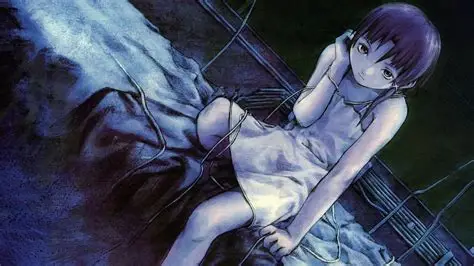
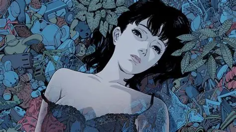
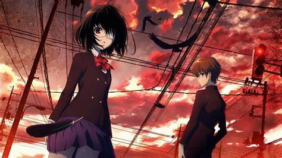
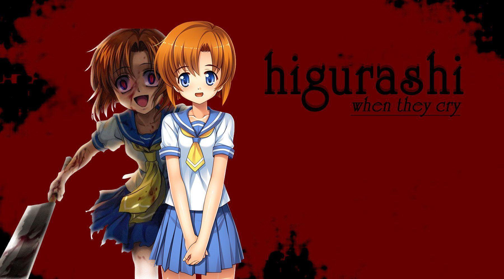
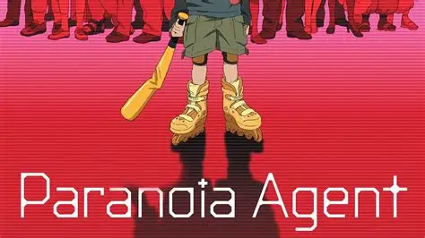
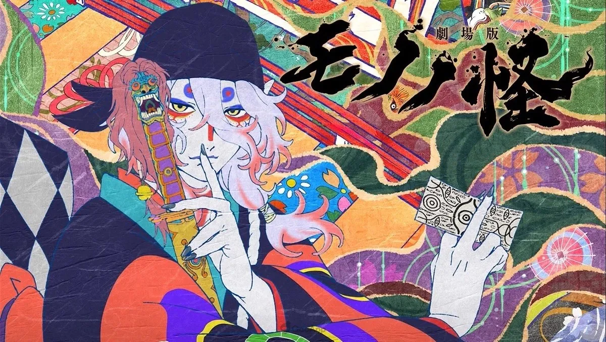
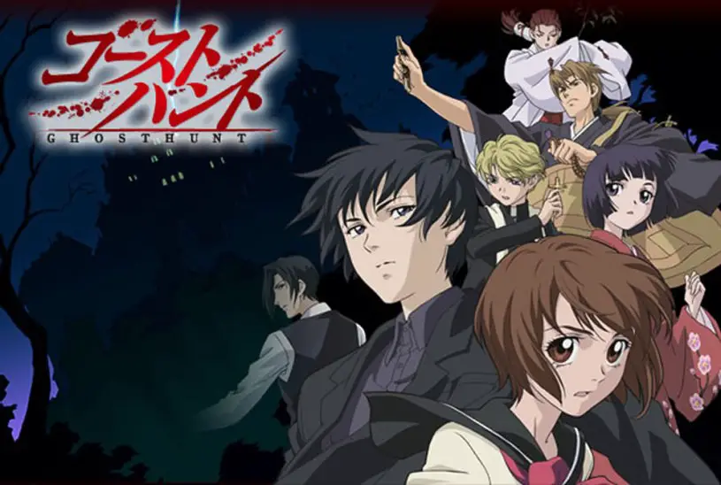

SMASH Senpai
Top 10 Best Horror Anime That Will Terrify You
Horror anime is not just about gore or jump scares — it’s about **psychological dread, existential fear, and emotional trauma**. The best horror anime leave scars, forcing viewers to confront fear, despair, and the darker side of humanity.
This list ranks the Top 10 Best Horror Anime of All Time, featuring series that disturbed audiences, pushed boundaries, and created unforgettable nightmares. These aren’t just scary — they are deeply unsettling.
Sponsored
#1 Serial Experiments Lain
Serial Experiments Lain is not traditional horror — it is existential terror disguised as a slow-burning psychological experiment. The series follows Lain Iwakura, a quiet and socially isolated girl whose connection to “the Wired” begins to dissolve the boundaries between reality, consciousness, and identity itself. As the narrative progresses, viewers are deliberately stripped of stability, mirroring Lain’s own mental fragmentation.
The horror in Lain is subtle but relentless. Long silences, distorted audio, and glitch-heavy visuals create a constant sense of unease. The anime rarely explains itself, forcing viewers to piece together meaning from abstract symbolism and fragmented conversations. This lack of clarity becomes the horror — reality no longer feels trustworthy.
What makes Lain especially disturbing today is how prophetic it feels. Themes of digital identity, online personas, social isolation, and hive-mind consciousness feel frighteningly relevant in the modern internet age. The series questions whether identity exists independently of perception, and what happens when technology begins to replace human connection.
Serial Experiments Lain doesn’t rely on gore or jump scares. Instead, it invades the mind, leaving viewers questioning their own sense of self. It is horror that unfolds slowly, quietly, and permanently.

play anime smash or pass here (not sponsored)
SMASH SENPAI – Smash or Pass#2 Perfect Blue
Perfect Blue is a masterclass in psychological horror that dismantles the concept of identity through paranoia, obsession, and mental collapse. The story follows Mima Kirigoe, a pop idol attempting to transition into acting — a decision that triggers a terrifying spiral of hallucinations, stalking, and self-doubt. The horror lies in how real it feels. There are no monsters — only human obsession and mental breakdown. The film blurs hallucination and reality so effectively that viewers themselves feel disoriented.
Unlike supernatural horror, Perfect Blue is horrifying because everything feels possible. The film constantly blurs the line between reality and delusion, using sharp editing and unreliable perspectives to disorient the viewer. Scenes repeat with subtle changes, making it impossible to trust what is real — a technique that places the audience inside Mima’s fractured mind.The true terror lies in obsession and loss of agency. Mima is constantly watched, judged, and controlled by others, reflecting the darker side of fame and parasocial relationships. The absence of monsters makes the horror more intimate and disturbing — humans become the threat.
Perfect Blue is emotionally exhausting, unsettling, and unforgettable. Its influence can be seen in major psychological thrillers worldwide, yet it remains one of anime’s most disturbing achievements.
Sponsored
#3 Another
Another is a relentless blend of supernatural mystery and shock horror that thrives on unpredictability. Set in a cursed classroom where death follows students indiscriminately, the anime establishes one brutal rule: no one is safe.
What makes Another effective is its pacing. Long stretches of eerie calm are shattered by sudden, violent deaths that come without warning. These moments are intentionally shocking, keeping viewers in a constant state of anxiety. Even mundane situations feel dangerous, as the curse can strike at any moment.
Beyond gore, Another succeeds through paranoia. Students are forced to follow bizarre rules to survive, and every decision carries fatal consequences. The mystery surrounding Misaki Mei and the class’s past slowly unfolds, tightening the sense of dread with each episode.
While often remembered for its infamous death scenes, Another is more than just shock value. It is a tense, oppressive horror experience that punishes complacency and rewards attention.
#4 Shiki

Shiki is a slow, suffocating descent into moral horror. Set in a remote village plagued by unexplained deaths, the series examines how fear transforms ordinary people into monsters. Rather than focusing solely on vampires, Shiki uses the supernatural to expose humanity’s darkest instincts.
The anime’s pacing is deliberately slow, allowing dread to build gradually. As deaths increase, paranoia spreads, and the villagers’ moral boundaries begin to erode. The real horror emerges when survival instincts override empathy, leading to acts of cruelty justified as necessity. Shiki refuses to present clear heroes or villains. Both humans and Shiki are capable of kindness and brutality, forcing viewers to confront uncomfortable ethical questions. Is survival worth abandoning humanity? By the end, Shiki leaves viewers emotionally devastated. Its horror is not just fear — it is the realization of how easily morality collapses under pressure.Sponsored
#5 Higurashi: When They Cry
Higurashi is psychological horror built on mistrust and repetition. What begins as a cheerful slice-of-life story slowly mutates into madness, violence, and despair. The looping narrative structure ensures that safety is always an illusion.
Each arc resets the story, but subtle differences change everything. Friendships turn hostile, paranoia spreads rapidly, and brutal violence erupts without warning. The unpredictability is terrifying — characters you trust can snap instantly. The anime’s horror lies in psychological breakdown. Characters are pushed beyond mental limits, leading to paranoia-fueled violence. Combined with graphic gore, the emotional impact is devastating. Higurashi is exhausting, disturbing, and unforgettable. It traps viewers in a cycle of fear, confusion, and hopelessness — true psychological terror.#6 Texhnolyze

Texhnolyze is horror stripped of spectacle and reduced to its most oppressive form: hopelessness. Set in the decaying underground city of Lux, the anime presents a world already past the point of salvation. Society is fractured, violence is normalized, and human life holds little value. From the very first episode, the series makes it clear that this is not a story about survival — it is a story about inevitable collapse.
Unlike conventional horror, Texhnolyze relies heavily on silence, minimal dialogue, and bleak visual storytelling. Long stretches pass without explanation, forcing viewers to absorb the atmosphere rather than rely on exposition. This creates an overwhelming sense of isolation. You are not guided, comforted, or reassured — you are abandoned inside the world.
The horror becomes existential. Characters are not driven by hope or redemption, but by desperation, power struggles, and resignation. Violence feels meaningless, yet unavoidable. As technology replaces flesh and humanity erodes, the anime asks disturbing questions about identity and purpose in a world devoid of meaning.
What makes Texhnolyze terrifying is its emotional weight. There are no victories, no relief, and no escape. The story suffocates slowly, pressing down on the viewer until despair feels inescapable. It is not horror that shocks — it is horror that crushes.
Texhnolyze is exhausting, bleak, and unforgettable. It is a brutal meditation on nihilism, making it one of the darkest psychological horror anime ever created.
Sponsored
#7 Paranoia Agent
Paranoia Agent transforms fear into a shared psychological phenomenon. Centered around the mysterious figure known as Lil’ Slugger, the anime explores how stress, guilt, and denial spread through society like an infection. Each episode focuses on different individuals, revealing how personal trauma manifests as collective madness.
What makes Paranoia Agent deeply unsettling is its instability. The tone shifts unpredictably between humor, surrealism, and horror, preventing the viewer from finding emotional footing. Reality fractures without warning, and the line between hallucination and truth becomes meaningless. Fear is no longer external — it lives inside the characters’ minds.
Rather than relying on traditional horror imagery, the anime uses psychological discomfort. Characters are consumed by societal pressure, expectations, and unresolved guilt. Lil’ Slugger becomes a symbol rather than a villain — an embodiment of escapism from responsibility and pain.
The horror intensifies as the narrative expands beyond individuals and exposes a larger societal breakdown. Rumors spread, logic collapses, and mass hysteria takes hold. The anime suggests that fear does not need a monster to exist — it only needs collective belief.
Paranoia Agent is disturbing because it feels plausible. Its horror lies in psychological fragility and social pressure, making it one of anime’s most intellectually unsettling works.
#8 Mononoke
Mononoke approaches horror as an artistic exploration of trauma, guilt, and repression. Each arc follows the mysterious Medicine Seller as he encounters supernatural entities born from unresolved emotional wounds. These spirits are not random monsters — they are reflections of human suffering.
The anime’s distinctive art style plays a major role in its horror. Bold colors, unsettling patterns, and surreal compositions create an atmosphere that feels dreamlike and oppressive. The visuals often clash with traditional expectations of anime, reinforcing the sense that nothing in this world is stable or safe.
Rather than relying on violence, Mononoke builds fear through revelation. The Medicine Seller cannot defeat a spirit until its Form, Truth, and Reason are exposed. This process forces characters to confront painful memories and hidden sins, turning emotional exposure into a terrifying experience.
The horror lies in realization. Each story reveals how denial and repression give birth to monsters, suggesting that the most frightening forces are created by the human psyche itself. The supernatural is merely a mirror.
Mononoke is unsettling, beautiful, and deeply disturbing. It proves that horror does not need darkness or gore — only truth.
#9 Devilman Crybaby

Devilman Crybaby is horror through emotional devastation. Beneath its graphic violence and chaotic visuals lies a deeply disturbing exploration of humanity’s capacity for cruelty. The anime begins with personal tragedy, but quickly expands into a complete societal collapse.
What makes Devilman Crybaby horrifying is its emotional rawness. Characters are stripped of innocence, dignity, and safety as fear spreads uncontrollably. Violence becomes normalized, and empathy is treated as weakness. The anime does not offer comfort — it forces the viewer to witness suffering without relief.
The horror escalates as love and hatred intertwine. Acts meant to protect others instead fuel destruction, reinforcing the idea that fear corrupts even the purest intentions. Humanity itself becomes the antagonist.
Rather than focusing on monsters, Devilman Crybaby exposes how easily society turns against itself. The true terror lies in watching compassion disappear and cruelty take its place.
The series leaves a lasting emotional impact. It is painful, nihilistic, and unforgettable — a horror experience that lingers long after the final episode.
#10 Ghost Hunt
Ghost Hunt delivers grounded, methodical horror rooted in realism and folklore. Each case unfolds like a serious paranormal investigation, emphasizing research, logic, and psychological tension rather than spectacle. This realism is what makes the horror feel unsettlingly plausible.
The anime builds fear slowly. Long periods of quiet investigation are punctuated by disturbing revelations, eerie atmospheres, and escalating danger. Rather than relying on jump scares, Ghost Hunt allows dread to accumulate naturally.
Possessions, curses, and hauntings are treated with respect and seriousness. There is no exaggeration or sensationalism — only the gradual realization that something is deeply wrong. This restrained approach makes the supernatural feel more believable and therefore more frightening.
What sets Ghost Hunt apart is its consistency. Each story maintains tension without rushing resolution, creating sustained unease. Characters react realistically, making the fear feel earned rather than forced.
Ghost Hunt may be understated, but its slow-burning approach makes it one of anime’s most effective pure horror experiences — subtle, realistic, and deeply unsettling.
Play Smash or Pass on SMASH Senpai.
 PLAY SMASH OR PASS
PLAY SMASH OR PASS